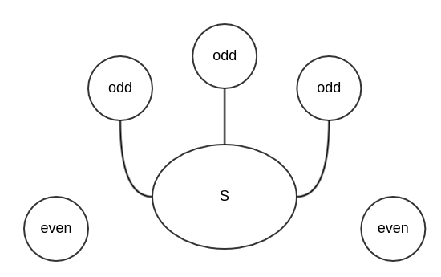
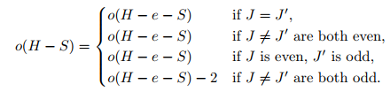
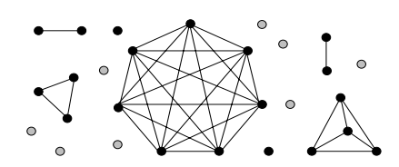
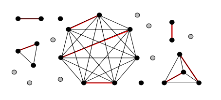
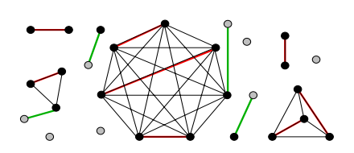
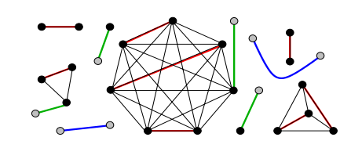
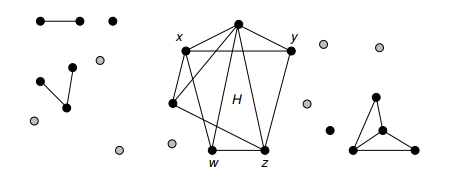
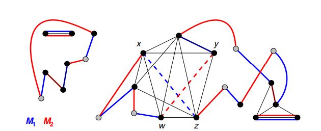
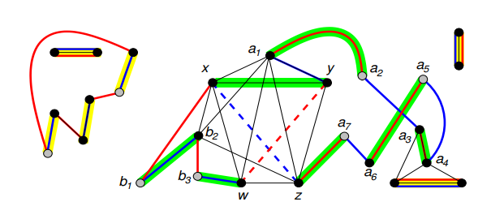

由 Tutte 於 1947 年提出，理論為 A graph G has a 1-factor iff o(G-S)<=|S| for every S ⊆ V(G)，而是理論也稱為該 graph G 的 Tutte's Condition
o(G): 表示 graph G 的 odd components 的數量1-factor: 等於 perfact matching 的狀態V(G): 表示 graph G 的 vertex 集合並且可以知道其幾項性質：
n (e.g. = n(G))- 式(1)o(G − S) ≤ |S|, - 式(2)從正向（Necessity）與反向（Sufficiency）證明

G-S 的 odd components 皆有一條 edge 連到 S 上|S| >= o(G-S) 這條式子必成立從正面去證明是直觀，並且簡單的；
而接下來是 tutte 的精華o(G-S) <= |S| 性質的 graph，其必有 1-factor（perfact matching）的存在1-factor)o(G-S) <= |S| 性質，卻沒有 1-factor）來做證明，透過相同模型（分兩邊做討論），來分析各種情況，舉出擁有 1-factor 的實例，說明此假設錯誤，tutte's theorem 為真空集合，這樣從式(2)中可以得到 o(G-S) = o(G) ≤ |S| = 0，所以從式(1)當中可以知道 n(G) 是 even o(G-∅) = o(G) = 0, 表示沒有奇數 component!
而此代表，graph G 的中 vertex 數量必定為 even !增加一條 edge 並維持 Tutte Condition，也就是說，假設 e ∈ E(H)，而 H - e 符合 Tutte Condition（ 這個 H 就是加完 edge 並符合 Tutte Condition 的結果 ）
如何證明？
H - e 符合 Tutte ConditionH - S = H - e - S ，這麼一來，便可以知道： o(H - S) = o(H - e - S) ≤ |S|否則，假設 J, J' 為 H - e - S 中的 Component，其內包含了 e 的 endpoint； 則可知其性質可分為以下幾種：

而這幾種 case 都符合 o(H - S) ≤ o(H - e - S) ≤ |S|，則證明了 Claim 1 的假設符合 Tutte Condition
Maximal counterexample G，使這個 G 擁有幾項特性： 便可以產生一個 1-factor 的 graph （也就是目前的 G 是達飽和狀態前的 graph） 有了以上的認知後，我們可以接下來做；使用多個狀態來展示矛盾狀況即可證明。
U = {v ∈ V | N(v) = V − {v} = {v ∈ V | dG(v) = n − 1}.
N(v) 為 v 的 neighbor 集合，可以看到其集合為整個 Vertex Set，除自己以外的所有其他 vertex針對 G-U ，來先分為兩個情況下去做討論G-U 是為互不相連的 cliques（complete graph） 組成，如下圖所示：

|U| = 8
式(1)，U 擁有相同的性質： 大於等於 o(G-U)接著可以建立 G-U 的 Maximum matching M (下圖中的紅色 edge)，試圖感染所有 G-U 的 components 中所有的 vertices
必有一個 vertex 無法被 matching 所感染

到此為止，graph 當中沒有 matched 的 vertices 數量為 |U| - o(G-U)
成對、並且相鄰的（其 degree 為所有 vertex 數量減 1）而這些 vertices 數量為偶數；
為何為偶數？
Ans: 因為可以從前面得知，目前 graph 的組成使用到了：
(1) 偶數的 components -> 提供 even number 的 vertices
(2) 奇數的 components -> 提供 odd number 的 vertices
(3) 而 U 內與奇數 components 相連使用的 vertices -> odd
而在一開始假設那段，我們可以知道再情況下， graph 的 vertice 總數量為 even ！
那麼從上面可知，even（總數）- even（偶數 comp.）- odd（奇數 comp.） - odd（U 內對應的 vertices）後的結果，必為偶數！(U 內剩餘的 vertices)由於剩餘的互相為 pairwise adjacent vertices，這些 vertice 可以自行形成 perfect matching (下圖中藍色部份)

這麼一來，Case 1 的狀態便分析完畢
G-U 並非互不相連的 cliques（complete graph）的情形。如下圖：

設 H 為其中一個 G-U 中的 component，並且不為 clique.
x, zx, z 中有一個相同的鄰居 yw，其屬於 G-U 的 vertex set 當中，並且 wy 之間的 edge 並不存在注意：
w 可能不一定屬於 H回到 G 的部份，當加入一個 single edge 進 G 後，則會產生一個 perfect matching； 根據此，我們假設了兩個 matching - M1(藍色) = G + xz 以及 M2(紅色) = G + wy，如下圖所示：

path 或是 even cycle而針對這個 component C 再下去做分析，則可以再分為兩個 case 做討論：
yw 不屬於 C 時，則 M1 與 C 取 symmetric difference 的結果等於 M2 與 E（C）取交集 再與 M1 扣除 E（C）後的結果做聯集，其結果為一 perfect matching 且不包含 xz 或是 wy，合法屬於 G 的 perfect matching
yw 屬於 C，則我們可以稍微改一下上面圖，並標示出每個屬於 C 的 vertex: w,y,a1,a2,...,ap,z,x,b1,b2,...,bq
其中上面的 p, q 皆為 odd
|V(C)| = 4 + p + q， 為 even !所以 edge 集合為 M*
綠色部份展示為一組 perfect matching 於 V(C) 黃色部份是展示 M1 - E(C) 為一組 perfect matching 於 V - V(C)
如此我們便可以說，在符合 tutte condition 情況下，其必定有 1-factor 的存在